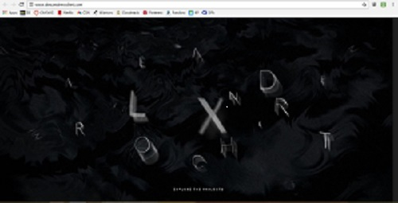
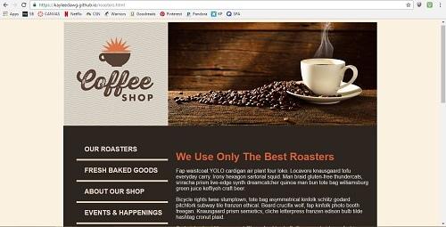

Website Critique
5 October 2016
FOR MY FIRST blog post, I chose to analyze Alexandre Rochet’s website. The main title page looks simple, and a little ambiguous at first glance, but after moving your mouse you see its function. The letters move around to more clearly form the name “Alexandre Rochet” and it is a fun and simple way to present the website. The white text that reads “explore the projects” stands out against the dark black background, and can be easily recognized as a link button. The website relies a lot on movement and interaction, and is used to showcase various brands and ads.
After clicking on a project, a new page opens that has a wide range of information, such as the role, date and a small blurb about the campaign. Upon scrolling down, there are examples of different advertisements of the product that show how the company choose to market it to the public.
The color scheme is mostly blacks, whites, and grays with little pops of color in various ads. This produces a very clean and sleek look, which works well with the top tier designer brands that are being showcased. The hierarchy is organized by having the most important info at the top, the user would have to keep scrolling down to view the ad examples, which hold less importance.
I think the website is very well done, and is fairly easy to use. The design is very sophisticated and seems to reflect the designer’s personal style, which is the purpose of an online portfolio. I think it is a very creative way to showcase work that shows the type of design to expect and the computer/organizational skills that come with making a functional website. However, there are a lot of moving parts, which can be a tad overwhelming when trying to read and process the text. If the user keeps scrolling, there is more and more information to be seen, which can be tiresome if you just want to see everything at once on the page. In addition, the navigation buttons are not labeled, which could make it difficult for less-tech savvy users, but I was able to pick it up quickly. Overall, I think this website works very well and if I had more time, I would want to explore it in full.

Coding Experience
10 October 2016
WHEN CREATING THE “Our Roasters” page, I actually didn’t run into many problems and I was pleasantly surprised with how fast I was able to get the page up and running. Since we had already completed most of the html and all of the css, I was able to copy and paste a lot of the coding into the new page. The only changes I had to make was to the images and the increased amount of text within the article.
My only problem was a small error in spelling, which prevented the bottom picture of the coffee beans from showing up on the page. Other than that, each checkpoint that I tested worked on the first try, and the page was linked and ready after I discovered my spelling error. Overall, it was a pretty easy assignment given that most of the coding was already completed.

Article Response
24 October 2016
For my third blog post, I chose to read Richard Fink's article titled "Webfonts on the Prairie", where he discusses and responds to Adam Morse's claim that the world would be better off without webfonts. Morse argues that system fonts are perfectly adequate because they do not fail with slow internet connection and that webfonts do not solve a specific problem for the consumers. Fink’s rebuttle was that although there are some minor problems with webfonts on slow connection browsers, the overall benefits and the strides that the tech world has made to ensure faster internet outweigh the concerns.
Fink states that over sixty percent of websites use webfonts, which is a whopping increase from the measly two percent in 2011. This increase showed me that more and more people are focused on the aesthetics and mood of not only their site, but also their brand. Webfonts add life and personality to an otherwise common looking webpage, and allows the user to get a feel of the type of environment and message the creator intended to give off.
This article has convinced me that it's in a designer’s nature to use webfonts in their designs because it makes them unique and stands out from the rest of the system-font websites. I will strive to include webfonts in my future projects to more accurately reflect the mood that I want my website to present.
Responsive Website
November 2016
For my responsive website critique, I was immediately draw to the Design Made in Germany Magazine because it had a cat and other animals in its illustration. The site was in German, so I translated the page to get a better understanding of its content. In a laptop view, the initial header of the animals covers part of the title, which is a little confusing if someone were to randomly come across the page, but the illustration is really nice to look at. Scrolling down, there is a transparent grey box that has the text, which another cool animal illustration as the background image. The box is not transparent enough for the image to take away from the text though.
I have the iPhone 6, which is one of the breakpoints I chose to analyze. On the phone, the images are more cut off and the text is closely grouped together. The navigation bar is greatly reduced to just arrows rather than being able to hover over a number and get the article title on a laptop. The header image is gone completely, which takes away from the initial interpretation of the website for me.
On an iPad, the website still retains a lot of the layout design that is on a laptop. The full navigation bar and content is back, and all of the images are in the same position. Everything is clearly labeled and the website is very easy to navigate. Overall, the website is very well designed, and the color scheme goes perfectly with the illustrations. I do prefer the laptop or iPad design however, because I think the drawings add a lot to the website and shouldn’t be compromised on mobile devices.